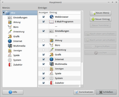

Xfce Menü
Dieser Artikel wurde für die folgenden Ubuntu-Versionen getestet:
Dieser Artikel ist größtenteils für alle Ubuntu-Versionen gültig.
Zum Verständnis dieses Artikels sind folgende Seiten hilfreich:
 Die Einträge im
Die Einträge im  Startmenü werden von Xfce automatisch generiert und eingefügt. Dabei hält es sich an die Standards von Freedesktop.org
Startmenü werden von Xfce automatisch generiert und eingefügt. Dabei hält es sich an die Standards von Freedesktop.org  . Das Menü wird dynamisch aus .desktop-Dateien aufgebaut, deren Informationen die eigentliche Hierarchie ergeben.
. Das Menü wird dynamisch aus .desktop-Dateien aufgebaut, deren Informationen die eigentliche Hierarchie ergeben.
In den folgenden Verzeichnissen sucht Xfce nach .desktop Dateien (siehe auch Programmstarter):
~/.local/share/applications/
/etc/xdg/xubuntu/applications/
/usr/share/applications/
/usr/share/gnome/apps/
/home/user/.kde/share/
/usr/share/applnk/
Probleme mit dem Menü¶
Übersetzung¶
Einige Teile im Menü von Xfce sind noch nicht übersetzt bzw. eingebunden worden. Bestandteile dieses Systemmenüs werden vom System selbst verwaltet und erstellt und können in Xubuntu über den Menüeditor Alacarte bearbeitet werden. Das Programm ist der Standard-Menüeditor der Desktopumgebung GNOME 2 und kann im Menü über "Anwendungen -> Einstellungen -> Hauptmenü" gestartet werden.
Wenn Programme im Menü fehlen...¶
..., kann dies an verschiedenen Ursachen liegen:
Das Programm hat keine .desktop-Datei erstellt.
Das Programm hat die .desktop-Datei nicht in einen der gesuchten Standardpfade gelegt.
Das Programm hat die .desktop-Datei in einen Standardpfad gelegt, aber das Programm selbst befindet sich nicht in einem Standardpfad (z.B. in /opt/Programm). In diesem Fall muss man die "XDG_DATA_DIRS"-Variable anpassen und Xfce neustarten.
Evtl. kann auch "Anwendungen -> Zubehör -> Appfinder" bzw. "Zubehör -> Anwendungsfinder" helfen.
Falsche Platzierung¶
Wer zum Beispiel den RealPlayer 10 installiert hat, kennt das Problem. Man findet den Player im Xfce Menü nun unter "Graphics", wo er natürlich nicht hingehört. Um dies zu ändern, nutzt man entweder den Menüeditor oder man muss die realplay.desktop-Datei des Programms in einem Editor bearbeiten.
Bei letzterem ist dabei in der Datei der Wert "Categories=Graphics" ausschlaggebend. Es muss bei dem Beispiel "Graphics" auf den gewünschten Menünamen geändert werden, hier auf "AudioVideo".
Alle verfügbaren Kategorien kann man hier einsehen. Mehrere Angaben sind möglich.
|  |
| Menüeditor |
Menüeditor¶
Ab Xfce 4.6 und damit bis einschließlich Xubuntu 13.10 ist kein eigener Menü-Editor mehr enthalten (siehe Customize the Xfce menu ). Die Xfce-Entwickler empfehlen die Verwendung von Alacarte, Xubuntu verwendet ab Ubuntu 14.04 den Menüeditor MenuLibre.
Editor¶
Um das Menü zu bearbeiten, bearbeitet man die Datei ~/.config/menus/xfce-applications.menu mit einem Editor [2]. Vorher sollte man jedoch eine Sicherheitskopie der Datei anfertigen [1], damit man eventuelle Änderungen wieder rückgängig machen kann:
cp ~/.config/menus/xfce-applications.menu ~/.config/menus/xfce-applications.menu.bak
bzw. bis Xubuntu 10.10:
cp ~/.config/xfce4/desktop/menu.xml ~/.config/xfce4/desktop/bak_menu.xml
Im Zweifel befindet sich eine unveränderte Datei unter:
/etc/xdg/menus/xfce-applications.menu
Basiseintrag¶
Die Originaldatei mit Kommentaren versehen:
<?xml version="1.0" encoding="UTF-8"?>
<xfdesktop-menu>
<!-- Name des Menüs -->
<title name="Desktop-Menü"/>
<!-- Trennlinie -->
<separator/>
<!-- Anwendung -->
<app name="Programm ausführen ..." cmd="xfrun4"/>
<!-- Trennlinie -->
<separator/>
<!-- Anwendungen -->
<app name="Terminal" cmd="xfterm4"/>
<app name="Dateimanager" cmd="thunar" icon="file-manager"/>
<app name="Mozilla (Web-Browser)" cmd="xfbrowser4"/>
<!-- Trennlinie -->
<separator/>
<!-- Untermenü -->
<menu name="Einstellungen">
<!-- Anwendungen -->
<app name="Alle Einstellungen ..." cmd="xfce-setting-show" snotify="true"/>
<app name="Hintergrund ..." cmd="xfce-setting-show backdrop"/>
<!-- Ende Untermenü -->
</menu>
<!-- Trennlinie -->
<separator/>
<!-- Systemmenü -->
<include type="system" style="simple" unique="true" legacy="true"/>
<!-- Trennlinie -->
<separator/>
<!-- Abmelden ausgeblendet -->
<builtin name="Beenden" cmd="quit" visible="no"/>
</xfdesktop-menu>Menüelemente¶
Die Bedeutung der einzelnen Elemente:
| Menüelemente | |
| Element: | Beschreibung: |
<xfdesktop-menu> | Start des Menüs. |
<title name="march" visible="yes"/> | Name des Menüs: march - sichtbar: ja (yes). Zum Ausblenden Option no wählen. |
<separator/> | Trennlinie |
<include type="system" style="simple" unique="true" legacy="true"/> | Systemmenü wird eingeblendet Stil: einfach. Alternativoption für mehrere Inhaltsebenen: multilevel |
<menu name="Spiele" icon="apport"> | Leitet Menüeintrag Spiele ein. Danach können weitere Untermenüpunkte in dieser Form folgen. |
<app name="NAME" cmd="STARTBEFEHL" icon="BILDNAME"/> | Menüeintrag. |
</menu> | Menüpunkt Ende. |
<app name="NAME" cmd="STARTBEFEHL" icon="BILDNAME"/> | Das Programm NAME wird mit dem BILD angezeigt und mit BEFEHL gestartet. |
<builtin name="Beenden" cmd="quit" visible="no"/> | Logoutbutton im Menü ist ausgeblendet - um ihn anzuzeigen: visible="yes" |
</xfdesktop-menu> | Menüende. |
Wird das Systemmenü unterhalb eines Untermenüs gleichen Namens z.B. Anwendungen eingefügt, so erscheint der Inhalt des Systemmenüs in diesem. Dies kann mit beliebig vielen Menüpunkten kombiniert werden:
...
<menu name="Einstellungen">
...
</menu>
<separator/>
<menu name="Büro">
...
</menu>
<separator/>
<include type="system" style="simple" unique="true" legacy="true"/>
...Beispiel¶
Ein bearbeitetes Menü (ohne Untermenüs) mit Symbolen kann z.B. so aussehen:
<?xml version="1.0" encoding="UTF-8"?>
<xfdesktop-menu>
<title name="march"/>
<separator/>
<menu name="Einstellungen" icon="preferences-desktop.png">
<app name="Alle Einstellungen ..." cmd="xfce-setting-show" snotify="true" icon="preferences-desktop.png"/>
<app name="Hintergrund ..." cmd="xfce-setting-show backdrop" icon="preferences-desktop-wallpaper.png"/>
</menu>
<separator/>
<app name="Mozilla (Web-Browser)" cmd="xfbrowser4" icon="browser"/>
<app name="Dateimanager" cmd="thunar" icon="Thunar"/>
<app name="Terminal" cmd="xfterm4" icon="terminal"/>
<app name="Programm ausführen ..." cmd="xfrun4" icon="exec"/>
<separator/>
<include type="system" style="simple" unique="true" legacy="true"/>
<separator/>
<builtin name="Beenden" cmd="Beenden" icon="system-log-out.png" visible="yes"/>
<separator/>
<app name="Über Xfce" cmd="xfce4-about" icon="xubuntu-logo.png"/>
<app name="Hilfe" cmd="xfbrowser4 /usr/share/xubuntu-docs/about/xubuntu-index.html" icon="gnome-help"/>
</xfdesktop-menu>Wiederherstellung¶
Zur Wiederherstellung der menu.xml entweder den im Artikel genannten Inhalt einfügen oder im Terminal [1] die Originaldatei in das Benutzerverzeichnis kopieren:
cp /etc/xdg/menus/xfce-applications.menu ~/.config/menus/xfce-applications.menu
bzw. in Xubuntu 10.10:
cp /etc/xdg/xfce4/desktop/menu.xml.de ~/.config/xfce4/desktop/menu.xml
Super-Taste (OEM-Taste)¶
Um das Menü mit der OEM-Taste aufzurufen, muss der Befehl auf die gewünschte Taste gelegt werden z.B. Windows . Die Einrichtung von Tastaturkürzeln kann bequem in den Xfce Einstellungen vorgenommen oder über den im Artikel Xmodmap beschriebenen Weg erfolgen. Der Befehl für den Aufruf des Menüs lautet:
| Menüaufrufe | |
| Befehl | Beschreibung |
xfce4-popup-menu | Anwendungsmenü wird geöffnet. |
xfce4-popup-places | Places wird geöffnet. |
xfdesktop -menu | Ruft das Xfce-Menü auf |
xfdesktop -windowlist | Startet das Arbeitsflächenmenü. |
Programm-Verknüpfungen¶
Am einfachsten lassen sich die Programm-Verknüpfungen einer Datei mit Thunar ändern. Siehe Andere-Anwendung
Alternativ kann man unter ~/.local/share/applications/mimeapps.list in Erfahrung bringen bzw. ändern [2], welcher Dateityp welcher Anwendung zugeordnet ist:
[Default Applications] image/jpeg=gqview.desktop video/mpeg=lindvd.desktop audio/mpeg=lindvd.desktop;easytag.desktop
Hinter dem MIME-Typ ist die jeweilige Anwendung angegeben.
- Erstellt mit Inyoka
-
 2004 – 2017 ubuntuusers.de • Einige Rechte vorbehalten
2004 – 2017 ubuntuusers.de • Einige Rechte vorbehalten
Lizenz • Kontakt • Datenschutz • Impressum • Serverstatus -
Serverhousing gespendet von